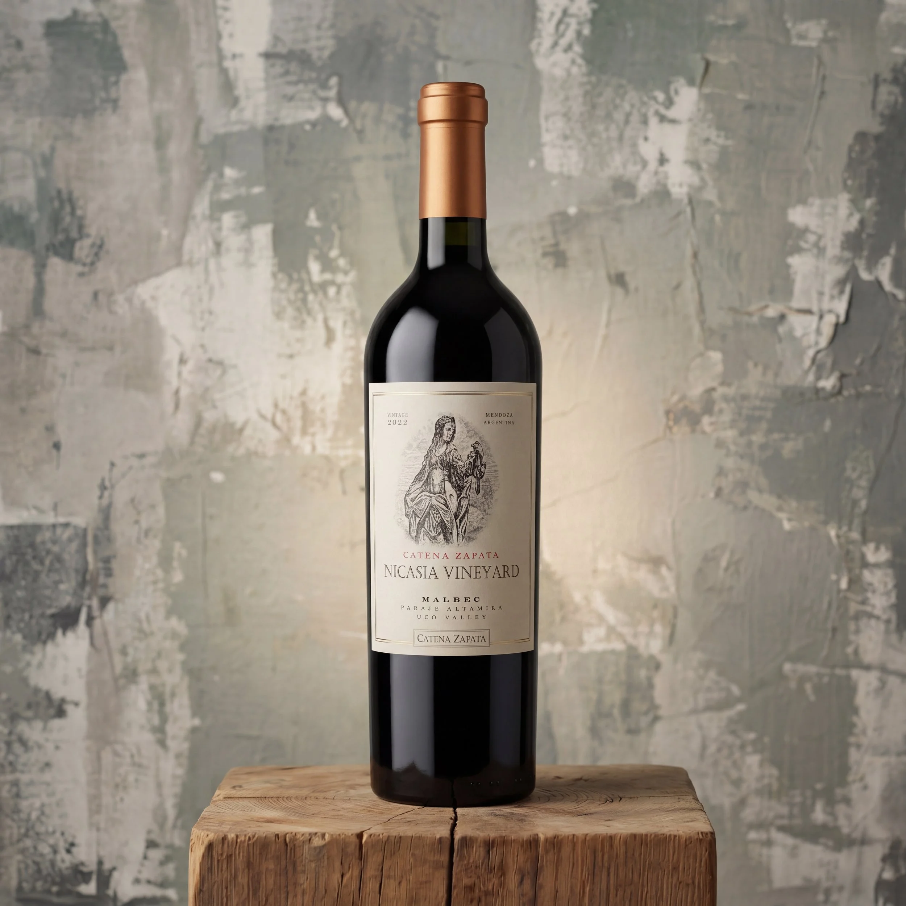

The Grape France Let Go, and Argentina Made Famous

In 1853, a French agronomist named Michel Aimé Pouget crossed the Andes on mules. He was carrying 28 bales of vine cuttings. Argentine president Domingo Faustino Sarmiento had sent him to transform the country's wine industry. Among those cuttings was Malbec.
Back in France, the grape had been in slow decline. Frost, rot, and a difficult climate made it unreliable. In the dry, sun-drenched foothills of the Andes, it found a second life. The altitude gave the grapes thicker skins. Thicker skins meant deeper colour, bolder flavour, and softer tannins. More sun, less humidity. Malbec thrived. It became Argentina's identity.
Argentina now grows 85% of the world's Malbec. Some of its oldest vines predate the phylloxera epidemic that wiped out most of Europe's vineyards in the late 1800s. The blight never crossed the Atlantic. Those original rootstocks are still producing.
What We're Pouring
We have ten Malbecs on the shelf, from everyday pours to reserve bottles. Here are two worth knowing.
Colomé Estate Malbec 2023
Valle Calchaquí, Salta · $47.99
Colomé was founded in 1831, one of the oldest wineries in Argentina. The estate sits in the Valle Calchaquí in Salta, one of the highest wine-growing regions on earth. When people talk about the deep roots of Argentine winemaking, this is what they mean. Literally.
Amalaya Malbec 2024
Salta, 5,900 ft above sea level · $26.99
Estate grown at 5,900 feet in Salta. At that altitude, the sun is intense, the nights are cold, and the grapes develop thick skins and concentrated flavour. A great place to start if you are exploring what Argentine Malbec can do beyond Mendoza.
Come in and we will walk you through the full selection.